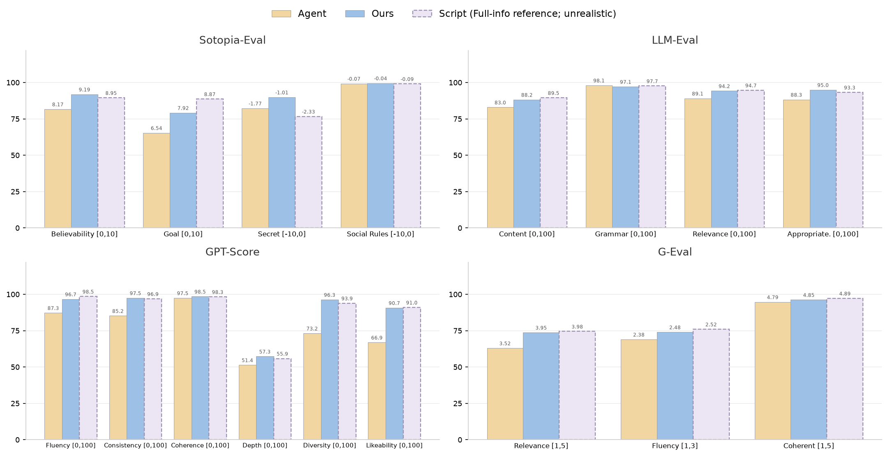
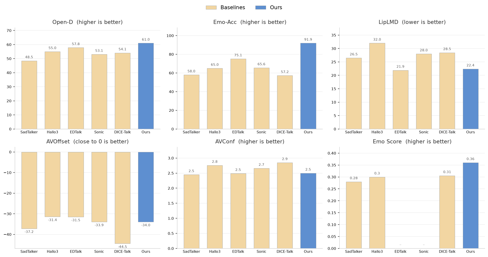

Resonant Minds:
Closed-Loop Social Avatars with Theory of Mind
[TL;DR] Resonant Minds is a closed-loop dual-agent framework unifying multimodal perception, Theory of Mind social reasoning, and emotion-controllable multimodal expression, supported by a hierarchical Persona-Scenario dataset.
🖱 Hover over a video to play it with sound
Scenario
In an art gallery filled with masterpieces, Einstein encounters the mysterious girl from Vermeer's painting. They discuss the mysteries of the universe, the eternity of art, and the relativity of time.


Abstract
Creating lifelike digital humans with genuine social intelligence requires unifying cognitive reasoning and multimodal generation within a coherent framework. Current approaches treat these as separate tasks: Large Language Models excel at dialogue but lack embodied expression, while diffusion-based talking head models achieve visual fidelity but ignore social cognition. To bridge this gap, we propose a closed-loop dual-agent framework integrating perception, social reasoning, and expression into a continuous interaction cycle. The perception module analyzes partners' multimodal behaviors from video, while the social reasoning module infers hidden mental states through Theory of Mind and selects responses via an ensemble mechanism. The expression module then generates emotion-controllable dual-agent videos synthesizing both speaker speech and expression alongside listener reactive behaviors, capturing bidirectional dynamics absent in prior work. We construct a hierarchical Persona-Scenario dataset with psychologically grounded personas and private social goals to support evaluation under information asymmetry. Experiments on this dataset demonstrate competitive or superior performance on both dialogue quality and video generation metrics. Notably, our method surpasses even the full-information Script mode on key dialogue quality dimensions, suggesting that explicit mental state inference under uncertainty can elicit more thoughtful dialogue than unrestricted information access.
Method
Closed-Loop Framework for Dual-Agent Interaction
We model dual-agent interaction as a Partially Observable Markov Game, running three modules in a closed loop. Perception turns the partner's video into structured observations. Social Reasoning infers the partner's hidden mental states through a Theory of Mind module and selects a response via an ensemble of evaluators. Expression renders the chosen response into a dual-agent video of both the speaker and the reactive listener.

Closed-loop framework for dual-agent interaction
Persona-Scenario Dataset Curation
We construct a hierarchical Persona-Scenario dataset to support evaluation under information asymmetry. Each persona comprises two layers: a facts layer of consistent biographical attributes, and a psychological layer of behavioral narratives grounded in the Big Five personality traits.


Persona-Scenario dataset statistics
Results
LLM Social Simulation
Theory of Mind Visualization. Ours infers through the ToM module that Kai fears being probed, and the Ensemble mechanism rejects further-probing candidates to select a response that respects Kai's boundary while still advancing Chen's goal.

We compare against two baselines: an Agent mode that sees only its own persona and goals, and a full-information Script mode that sees both agents' profiles. Bar heights are normalized to the percentage of each metric's valid range, and labels show the raw scores.
Talking Head Generation
We compare against state-of-the-art talking head methods on audio quality, visual synchronization, and emotional expressiveness. Our method achieves the best overall trade-off, leading on emotional expressiveness while remaining competitive on synchronization.
Qualitative comparison with state-of-the-art talking head generation methods.

Audio and video quality comparison against state-of-the-art talking head methods.
Citation
@misc{shangguan2026resonantmindsclosedloopsocial,
title={Resonant Minds: Closed-Loop Social Avatars with Theory of Mind},
author={Jianxu Shangguan and Jing Xu and Hang Ye and Xiaoxuan Ma and Yizhou Wang and Wentao Zhu},
year={2026},
eprint={2606.05896},
archivePrefix={arXiv},
primaryClass={cs.CV},
url={https://arxiv.org/abs/2606.05896},
}